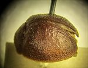
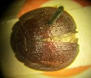
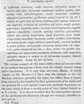

Click on images to enlarge
.jpg){kind=link}

Fig. 1. Paropsis brevissima type specimen, lateral view
.jpg){kind=link}

Fig. 2. Paropsis brevissima type specimen, dorsal view
{kind=link}

Fig. 3. Paropsis brevissima, description
Name
Paropsis brevissima Blackburn, 1897
Corresponds to
This is possibly Ta119 or Ta161, from its size, HCE/BL ratio and the relatively uniformly brown dorsal surface. It is also possible that it is Ta033, though that species' verrucae are generally darker in colour and the antero-median depression is usually better defined. However, note that brevissima is described from a single specimen.
Diagnosis and Notes
Blackburn (1897) deals with P. brevissima as part of his 'subgroup iv' (i.e., those species without "strongly marked characters", whose greatest height is considerably in front of the middle of the elytral margin). Within that group, he characterises it as:
AA. Prothorax not (or scarcely) explanate at sides;
BB. The verrucae unpunctured or nearly so;
C. Elytra not having a sharply defined discal transverse wheal-like ridge;
DD. Subhumeral depression wanting;
E. Elytral interstices but little rugulose, at least not to the extent of obscuring the punctures and verrucae;
F. Elytra (at least on hinder part) studded with sharply defined isolated bead-like verrucae;
G. The elytral verrucae small;
HH. The elytral puncturation notably finer and closer;
I. The marginal part of the elytra (especially near the apex) out-turned and well-defined.
Blackburn compares this species with verrucosa Marsham, pointing out that it lacks the dark verrucae, has the elytra more finely punctured and has a well-marked transverse postbasal impression on the elytra.
Type specimen
Location: BMNH
Label data: /“Type” (red-bordered circle)/ “6245 N.S.W. T”/ “Blackburn coll. 1910-236”/ “Paropsis brevissima, Blackb.”/
Male; Size (mm): 5.2 (L) x ? (W) x 2.35 (H); HCE/BL ~ 25% (estimated from photo of lateral view).
Very similar to Ta06, though anterio-median depression is very slight and verrucae (of same or marginally darker colour than derm) are present only in apical third of elytra.
Original description
Translation of original description (Figure 3) by ChatGPT, 04/2026:
♂. Very broadly subovate, very convex, the greatest height (seen from the side) situated before the middle of the elytral margin; somewhat shining; entirely reddish-ferruginous. Head densely and rather finely somewhat roughly punctulate. Prothorax broader than long as 2½ to 1, broadened from the apex almost to the base, behind the apex transversely impressed, rather densely and fairly finely (at the sides more coarsely) punctulate; sides slightly arcuate, not flattened; posterior angles rounded. Scutellum sparsely and rather finely punctulate. Elytra not depressed beneath the humeral callus, distinctly transversely impressed behind the base, rather densely and finely somewhat in rows (toward the sides a little more strongly) punctulate; verrucae moderate, arranged somewhat in rows in the posterior part; interstices scarcely rugulose; marginal portion fairly broad, scarcely distinct from the disc anteriorly but posteriorly (by a fairly impressed groove) distinctly separated; inner margin of the humeral callus equidistant from the suture and from the lateral margin of the elytra. Length 2½ lines [~5.3 mm], width 2⅕ lines [~4.7 mm].
References
Blackburn, T. 1897, "Revision of the genus Paropsis. Part II", Proceedings of the Linnean Society of New South Wales, vol. 22, 166-189 (page 175).
Copyright © 2026. All rights reserved.